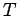

- 1. Allgemeine Gleichung einer Fläche zweiter Ordnung
| |
a11x2 |
+ a22y2+a33z2+2a12xy |
|
| |
|
|
(3.446) |
- 2. Gestalt der Fläche zweiter Ordnung aufgrund ihrer Gleichung
- Man ermittelt die Gestalt einer Fläche 2. Ordnung bei bekannter Gleichung nach dem Vorzeichen ihrer Invarianten und . Unter Gestalt der Flächen 2. Ordnung, Mittelpunktsflächen sowie unter Gestalt der Flächen 2. Ordnung, Paraboloide, Zylinder und Ebenenpaare ist eine tabellarische Zusammenfassung gegeben. Dort ist neben der Bezeichnung der Fläche ihre Gleichung in der Normalform, auf die sich eine gegebene Gleichung umformen läßt, angegeben. Mit den Gleichungen der sogenannten imaginären Flächen können für keinen reellen Punkt die Koordinaten berechnet werden, mit Ausnahme der Spitze des imaginären Kegels und der Schnittgeraden zweier imaginärer Ebenen.
- 3. Invariante einer Fläche zweiter Ordnung
- Setzt man die dann gilt
Bei einer Verschiebung oder Drehung der Koordinatenachsen ändern sich diese Größen nicht.